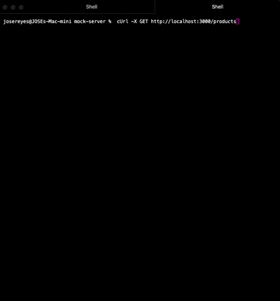
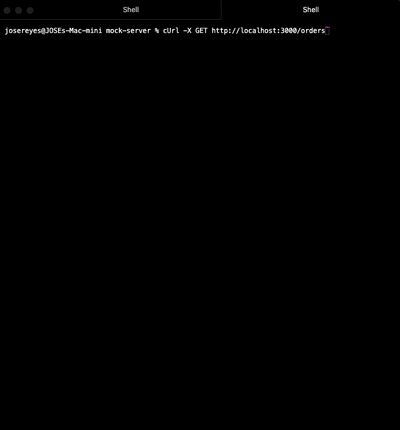
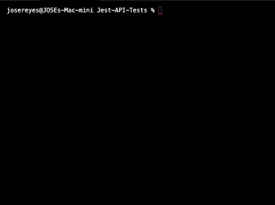
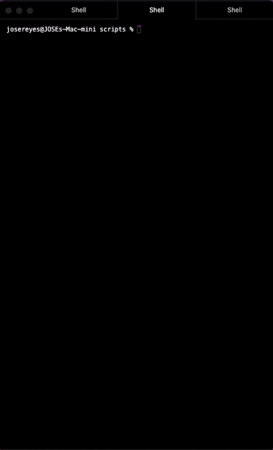

Portfolio
Playwright Test Automation
Github: Playwright_ts
A test automation project that leverages Playwright and TypeScript, utilizing the page objects and fixtures model. Test cases include UI validation assertions, along with
intercepting network requests, mocking the response and viewing the altered data in the UI.
Project is designed to run against a local instance of the "Real World" app developed by Cypress. Setup instructions are available in the projects README.
API Mock Server
Github: Mock Server
This project sets up a local API mock server using the json-server library.
It serves user, product, and order datasets in JSON format, enabling simulated API requests to various endpoints.
Ideal for test automation development without relying on a live backend.
Examples
GET request: http://localhost:3000/users
GET request: http://localhost:3000/products

GET request: http://localhost:3000/orders

Automated API Testing with Jest
Github: Jest-API-Tests
An API test automation project using Jest and JavaScript to perform CRUD operations against
a local mock server powered by json-server. Like Playwright_ts, this project utilizes reusable
class methods to reduce redundancy and improve maintainability. Setup instructions can be found in the README.
Example
Testing the Orders Endpoint:

Google Chrome Extension: WeatherApp
Github: Work In Progress
A Chrome extension leveraging the WeatherAPI and RestCountiesAPI to deliver current weather conditions.

API Scripts: Data Validations
Github: Work In Progress
1. Leveraging Node.js to develop data validation scripts as part of regression testing cycle.
